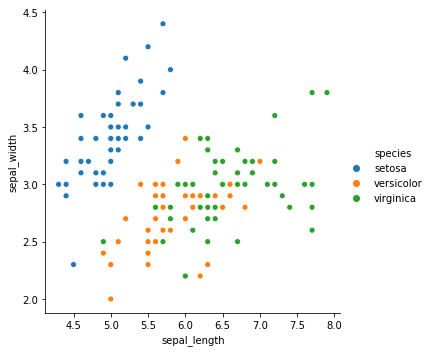
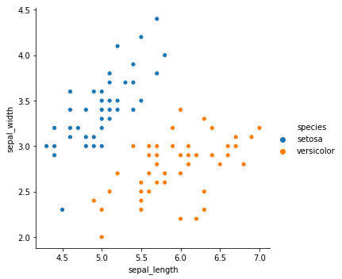
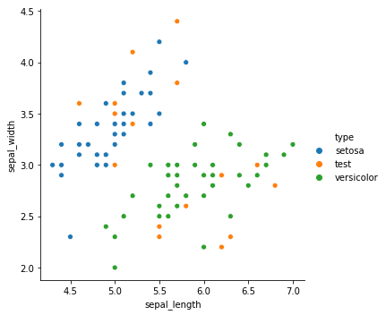
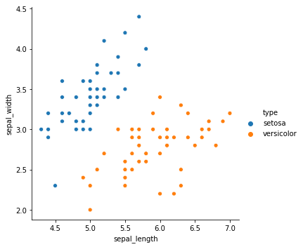

KNN原理
k 近邻算法的输入为实例的特征向量，对应于特征空间的点；输出为实例的类别，可以取多类。k 近邻算法假设给定一个训练数据集，其中的实例类别已定。分类时，对新的实例，根据其 k 个最近邻的训练实例的类别，通过多数表决等方式进行预测。因此，k近邻算法不具有显式的学习过程。
简单来说就是：我们想要知道研究的对象属于什么分类，我们只需要知道距离这个对象最近的K个对象里面，哪一个分类占比最大，那么该对象就属于这个分类。
近朱者赤，近墨者黑
一般地距离计算公式：
实际使用
- 收集数据：任何方法
- 准备数据：距离计算所需要的数值，最好是结构化的数据格式
- 分析数据：任何方法
- 训练算法：此步骤不适用于 k-近邻算法
- 测试算法：计算错误率
- 使用算法：输入样本数据和结构化的输出结果，然后运行 k-近邻算法判断输入数据分类属于哪个分类，最后对计算出的分类执行后续处理
我们尽量把过程可视化，这样方便我们比较直观地区理解，代码使用 Jupyter Notebook 编辑。
step1 引入数据
1 | import numpy as np |
输出如下：

图片还是有点复杂，随意取 setosa 和 versicolor
1 | dataset3 = dataset.loc[:,['species','sepal_length','sepal_width']] |
输出如下：

step2 划分测试集和训练集
1 | # 拆分数据,重新命令一下列名,查看一下测试集和训练集的分布 |
输出如下：

step3 训练数据
knn没有训练这一步
step4 预测数据
1 | # KNN其实灭有训练的过程， 计算即可，但是为了符合标准流程，试一试 |
输出如下：

可以看到，预测十分准确（主要是因为数据太干净太好了）
knn 简单实现
根据开头说的原理，我们可以给出一个很简单的实现，理解处理过程即可，细节灭有深究。
主要有三步：
- 计算新数据与样本数据集中每条数据的距离。
- 对求得的所有距离进行排序（从小到大，越小表示越相似）。
- 取前 k （k 一般小于等于 20 ）个样本数据对应的分类标签。
1 | import numpy as np |
数据的归一化问题
假设我们的数据，一个特征是数字极大但另一个特征特别小，那么我们计算的时候，对象间的距离就会被数字大的特征影响，导致结果不准确。所以我们要使用归一化的方法来处理。
max-min 归一化：
$Z$归一化：
knn 调参
k 是最重要的一个参数，一般建议是 k 小于20，鉴于数据量小，我们可以暴力的遍历一下来看看不同 k 值的表现
1 | # 参考 In[243] 代码 , 获取测试集和训练集 |
输出忽略，结论是 k = 3 或者 k = 5 时正确率最高。
当然了一个算法不会如此简单，也还有其他参数，比如说【距离的权重】等等，后面还得细细看
knn 的优缺点
优点：精度高、对异常值不敏感、无数据输入假定
缺点：计算复杂度高、空间复杂度高
适用数据范围：数值型和标称型